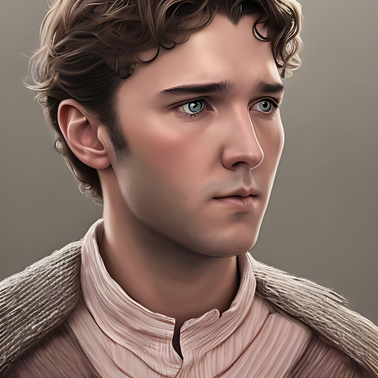

Welcome to my digital space
Hi, I’m Nick Voyzey, a business technologist all in on AI.
I believe artificial intelligence will profoundly reshape every corner of society, and I’m driven to be on the front lines of that transformation. Whether it's helping companies adapt, building tools to unlock new efficiencies, or guiding teams through digital change, I want to ensure organizations don’t just use AI—they thrive with it.
That mission crystallized during my time on the Data and AI Transformation team at Moderna, where I worked alongside passionate AI champions at the forefront of generative AI. It was the early days of the technology, but the stakes were real: empowering teams to save lives through mRNA innovation. That experience didn’t just teach me what AI can do, it showed me why it matters.
Now based in New York City, I’ve joined ING’s Operations and Change Management program, a two year rotation that gives me the chance to work across functions and bring tech driven change to a global bank.
Outside of work, I’m just as energized by motion and challenge, whether that’s running, skiing, climbing, or planning my next trip.
I understand the risks of AI, but I see even more possibility. If you're curious about how I think, feel free to talk to NickGPT below.
Get to know me through my AI persona. Ask me anything.
Launch NickGPTA showcase of AI-generated videos I've created.